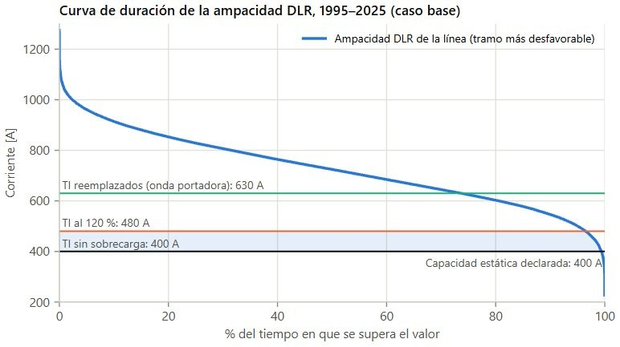

Capacidad dinámica de una línea aérea
Estudio preliminar de cuánta corriente admite una línea existente según el clima de cada hora.
- Estado
- Estudio preliminar (octubre a noviembre de 2026)
- Autoría
- Proyecto individual.
- Herramientas
- Python, NumPy, Matplotlib, ERA5

Problema
Una línea de 132 kV tiene declarada una capacidad fija de 400 A, calculada para condiciones desfavorables. La corriente que admite el conductor cambia con el viento, el sol y la temperatura, así que buena parte del tiempo podría llevar más.
Qué hice
- División de la traza en 69 tramos y balance térmico hora por hora con 31 años de clima.
- Revisión de los equipos en serie y del alcance de las protecciones de distancia.
- Propuesta de ubicación de sensores en los tramos críticos.
Resultados
| Capacidad declarada | 400 A |
|---|---|
| Capacidad térmica mediana del conductor | 725 A |
| Primer límite: transformadores de corriente con sobrecarga | 480 A |
| Horas en que el conductor admite 480 A o más | 96,5 % |
| Ganancia media estimada | 19,6 % |
Límites
- Falta confirmar el conductor, la sobrecarga de los transformadores de corriente y el arranque de los relés.
- No incluye estudios de red, tensión ni estabilidad.
- No hay mediciones sobre la línea.